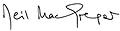

|
Now open!
Room
24
Admission free
The
Wellcome Trust Gallery is a stimulating new venue offering a fresh
perspective on the collections of the British Museum. It will house
a series of long term exhibitions each with a focus on life's challenges
as they affect all of us - from whatever cultural background we
come. Living and dying is the first of these. It looks at how people
around the world deal with the tough realities of life, averting
or confronting trouble, sorrow, need and sickness. What we find
is not an unremittingly solemn response, still less a single strategy
for dealing with such realities. The understanding of causes and
symptoms, the ways we find of coping, and the objects we make in
the process, are creative and inspiring.
The theme is
universal, it can be traced in one degree or another in all the
galleries of the British Museum. For the Wellcome Trust Gallery
is not just about particular cultures: in a sense it throws light
on the Museum's collections as a whole. In looking at and beyond
objects as a means of comprehending common human experience we enlarge
our experience of the world, opening a window on what life is and
was like for people in widely different places and times. We can
also, thereby, see our own assumptions and practices afresh.

Neil MacGregor
Director of the British Museum
|
Gallery
talks include:
7 August
11.15
Shamanism & transformation in Native Arts - Max
Carocci
20 August
11.15
Living with the earth in the Andes
|
|
|